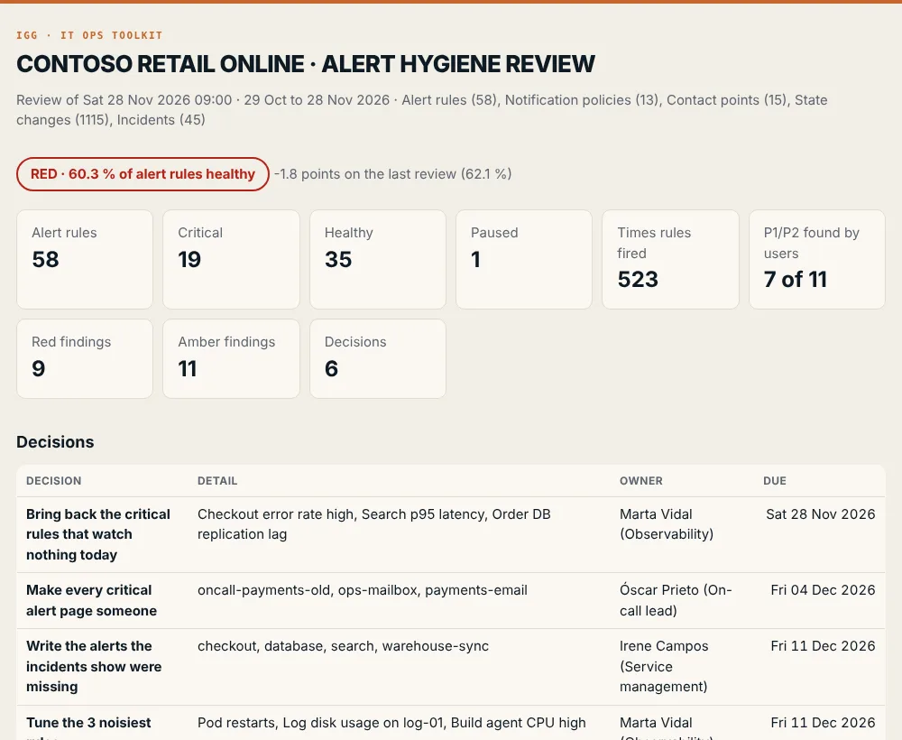

El 19 de noviembre se renombró una métrica y la regla que vigila el retraso de réplica de la base de datos de pedidos dejó de recibir datos. La regla está configurada para tratar la falta de datos como OK, así que siguió marcando Normal. Nueve días después la réplica de informes sigue atrasada, los clientes ya han llamado para decir que su historial solo muestra los pedidos de ayer, y no ha saltado ninguna alerta. Es lo primero que señala la revisión de higiene de alertas que acompaña a este post, un proyecto de código abierto que se ejecuta con datos de ejemplo de una tienda online ficticia.
Las alertas rara vez se rompen de golpe. Se degradan regla a regla: una regla pausada durante un despliegue ruidoso que nadie volvió a activar, una política de equipo que atrapa las alertas críticas antes que la de guardia, una regla que salta tanto que la gente deja de leer el canal. La revisión lee juntas, una vez al mes, las reglas, el enrutado, el historial y las incidencias.
Las reglas
La regla de tasa de errores del checkout está pausada desde el 14 de septiembre. Once reglas no tienen runbook, tres de ellas críticas; cinco reglas de una carpeta antigua no tienen etiqueta de equipo, así que no son de nadie; y dos reglas lanzan la misma consulta de CPU de nodo, así que un mismo problema avisa dos veces. Dos reglas críticas tratan la falta de datos o los errores como OK, que es como una fuente de datos muerta acaba pareciendo sana.
Adónde van las alertas
Cada regla se pasa por las políticas de notificación en el mismo orden en que lo hace Grafana. La política del equipo de pagos está por encima de la de críticas, así que sus dos reglas críticas llegan a una lista de correo y nadie se despierta de noche. Las reglas de devoluciones van a un punto de contacto de guardia antiguo sin nadie dentro, y «Website down» no tiene etiqueta de equipo, así que cae en la política por defecto y en un buzón de operaciones.
Ruido y puntos ciegos
Los reinicios de pods saltaron 312 veces en 30 días, y la regla de CPU de los agentes de compilación 96 veces, cuatro minutos de mediana: oscila, porque su periodo de espera es cero. La regla de disco de logs estuvo disparada el 98,9% del mes. La regla de latencia de búsqueda está en Error desde el 25 de noviembre, y la de retraso de réplica marca Normal solo por falta de datos desde el 19; las dos vencen hoy.
Lo que vio antes el usuario
Los usuarios avisaron de dos incidencias del checkout, una de ellas P1, y de dos de búsqueda antes de que saltara ninguna alerta: la regla de errores del checkout estaba pausada y la de latencia de búsqueda, en Error. La sincronización de stock con el almacén tuvo una P1 y una P2 y no tiene ninguna regla de alerta.
La demo saca 35 de 58 reglas (60,3%) sin hallazgos, 1,8 puntos menos que en la revisión anterior, con nueve hallazgos rojos y 11 ámbar y seis decisiones: recuperar hoy las reglas críticas que no vigilan nada, hacer que toda alerta crítica avise a alguien de guardia, escribir las alertas que las incidencias demuestran que faltaban, ajustar las reglas más ruidosas, dar a cada regla dueño, severidad, runbook y un tratamiento seguro de la falta de datos, y ordenar el enrutado.
Cómo usarlo con datos reales
Un script de Python de solo lectura exporta de la API de Grafana, con un token de cuenta de servicio, las reglas de alerta, las políticas de notificación, los puntos de contacto y el historial de estados; Grafana devuelve ocultos los secretos de los puntos de contacto, así que solo se guardan el tipo y el número de destinatarios. Las incidencias, con cómo se detectó cada una, salen de la herramienta de ITSM. Funciona con Python y sin dependencias externas, y genera un informe web, un dosier de una página para la revisión de monitorización y ficheros CSV con cada regla, punto de contacto, regla ruidosa o ciega, hallazgo y acción. Los datos de la demo son ficticios: la empresa, los nombres, las reglas y las cifras.
De dónde sale
La herramienta nace de la monitorización y la respuesta a incidentes: monitorizar con Grafana, SolarWinds, Zabbix, Dynatrace y Datadog y responder a las alarmas, las guardias y los runbooks que las sostienen, y dirigir la respuesta técnica a incidentes graves y los post-mortem que vienen después.
¿Quieres llevarlo a tu entorno o adaptarlo a tu caso? Escríbeme y lo vemos.
Tech Career Lab · newsletter
¿Te ha servido? Cada dos semanas envío una idea práctica para perfiles IT: LinkedIn, proyectos, networking y procesos de selección.
Apúntate y llévate las 33 ideas →